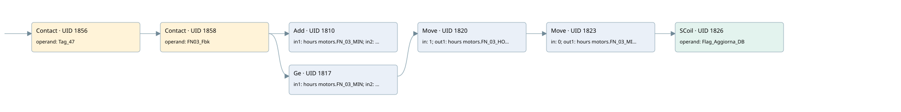

fn-03
time work motor · 검색 색인 순서 30 · 원본 내부 NID 추정 33
백업 PLF 원본의 2882151 바이트 위치에서 복원한 XML. 검색 문서 1031의 객체 키 161022003612000000000000와 연결했다. 이름 해석 12/12개. 남은 RefId는 상수 또는 미해석 참조다.
연결 구조 다시 그리기
원본 Part/PCon/Wire를 이용한 연결도다. TIA 화면의 래더 배치 또는 실행 결과를 재현한 그림은 아니다. 핀 연결은 아래 표와 원본 XML을 기준으로 읽는다. 노드 위에 마우스를 두면 피연산자 이름을 볼 수 있다.

접점·코일·블록과 피연산자
| Part UID | Gate | Negated 핀 | 연결 피연산자 |
|---|---|---|---|
| 1856 | Contact | operand = Tag_47 | |
| 1858 | Contact | operand = FN03_Fbk | |
| 1810 | Add | in1 = hours motors.FN_03_MIN; in2 = 1; out = hours motors.FN_03_MIN | |
| 1817 | Ge | in1 = hours motors.FN_03_MIN; in2 = 60 | |
| 1820 | Move | in = 1; out1 = hours motors.FN_03_HOUR | |
| 1823 | Move | in = 0; out1 = hours motors.FN_03_MIN | |
| 1826 | SCoil | operand = Flag_Aggiorna_DB |
접점 경로를 펼친 조건식
Contact·O/A·비교기의 원본 연결을 읽기 쉽게 펼친 보조 해석이다. POWER는 전원 레일 시작을 뜻한다. 호출 블록·에지·타이머의 내부 동작과 다중 쓰기 순서는 이 표로 실행 검증하지 않았다. 미해석 핀과 RefId는 원문 연결표에서 확인한다.
| UID | 동작 | 대상 | 원본 접점 경로 | 내용 |
|---|---|---|---|---|
| 1820 | Move | hours motors.FN_03_HOUR | ((Tag_47 AND FN03_Fbk) AND [hours motors.FN_03_MIN >= 60]) | Move 입력 1 |
| 1823 | Move | hours motors.FN_03_MIN | Move UID 1820.eno (블록 동작 확인) | Move 입력 0 |
| 1826 | SCoil | Flag_Aggiorna_DB | Move UID 1823.eno (블록 동작 확인) | 조건 성립 시 Set |
원본 배선 연결
| Wire UID | 동일 Wire 연결 끝점 |
|---|---|
| 1860 | Powerrail {} ↔ Part 1856.in |
| 1839 | ORef 1827 (Tag_47) ↔ Part 1856.operand |
| 1857 | Part 1856.out ↔ Part 1858.in |
| 1840 | ORef 1828 (FN03_Fbk) ↔ Part 1858.operand |
| 1859 | Part 1858.out ↔ Part 1810.en ↔ Part 1817.pre |
| 1841 | ORef 1829 (hours motors.FN_03_MIN) ↔ Part 1810.in1 |
| 1842 | ORef 1830 (1) ↔ Part 1810.in2 |
| 1843 | Part 1810.out ↔ ORef 1831 (hours motors.FN_03_MIN) |
| 1844 | ORef 1832 (hours motors.FN_03_MIN) ↔ Part 1817.in1 |
| 1845 | ORef 1833 (60) ↔ Part 1817.in2 |
| 1846 | Part 1817.out ↔ Part 1820.en |
| 1848 | ORef 1834 (1) ↔ Part 1820.in |
| 1850 | Part 1820.eno ↔ Part 1823.en |
| 1849 | Part 1820.out1 ↔ ORef 1835 (hours motors.FN_03_HOUR) |
| 1851 | ORef 1836 (0) ↔ Part 1823.in |
| 1853 | Part 1823.eno ↔ Part 1826.in |
| 1852 | Part 1823.out1 ↔ ORef 1837 (hours motors.FN_03_MIN) |
| 1854 | ORef 1838 (Flag_Aggiorna_DB) ↔ Part 1826.operand |
식별자 해석 근거 12개
| ORef UID | RefId | 이름 | IdentXmlPart 파일 | 해석 방법 |
|---|---|---|---|---|
| 1827 | 1 | Tag_47 | 0613-IdentXmlPart.xml | UID/RID + search-text + NID agreement |
| 1828 | 200 | FN03_Fbk | 0613-IdentXmlPart.xml | UID/RID + search-text + NID agreement |
| 1829 | 202 | hours motors.FN_03_MIN | 0615-IdentXmlPart.xml | UID/RID + search-text + NID agreement |
| 1830 | 7 | 1 | 0616-IdentXmlPart.xml | literal candidate: UID/RID/NID + nearby named declarations + search-text agreement |
| 1831 | 202 | hours motors.FN_03_MIN | 0615-IdentXmlPart.xml | UID/RID + search-text + NID agreement |
| 1832 | 202 | hours motors.FN_03_MIN | 0615-IdentXmlPart.xml | UID/RID + search-text + NID agreement |
| 1833 | 8 | 60 | 0616-IdentXmlPart.xml | literal candidate: UID/RID/NID + nearby named declarations + search-text agreement |
| 1834 | 7 | 1 | 0616-IdentXmlPart.xml | literal candidate: UID/RID/NID + nearby named declarations + search-text agreement |
| 1835 | 204 | hours motors.FN_03_HOUR | 0615-IdentXmlPart.xml | UID/RID + search-text + NID agreement |
| 1836 | 12 | 0 | 0616-IdentXmlPart.xml | literal candidate: UID/RID/NID + nearby named declarations + search-text agreement |
| 1837 | 202 | hours motors.FN_03_MIN | 0615-IdentXmlPart.xml | UID/RID + search-text + NID agreement |
| 1838 | 13 | Flag_Aggiorna_DB | 0613-IdentXmlPart.xml | UID/RID + search-text + NID agreement |
검색 코드 보조 자료
참조 명칭을 찾기 위한 자료이며 실행 순서나 AND/OR 관계는 위 연결표로 확인한다.
"tag_47" "fn03_fbk" add "hours motors".fn_03_min 1 "hours motors".fn_03_min 60 move 1 move 0 "flag_aggiorna_db" "hours motors".fn_03_hour "hours motors".fn_03_min "hours motors".fn_03_min